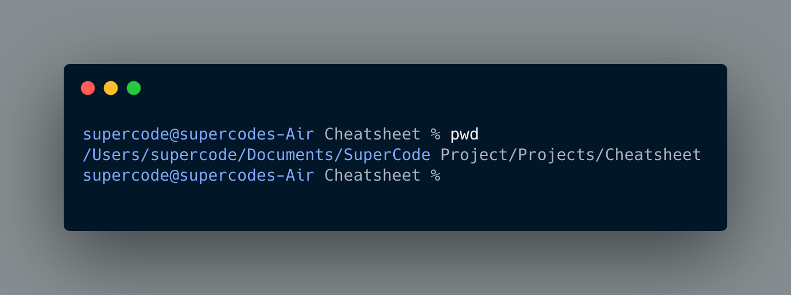
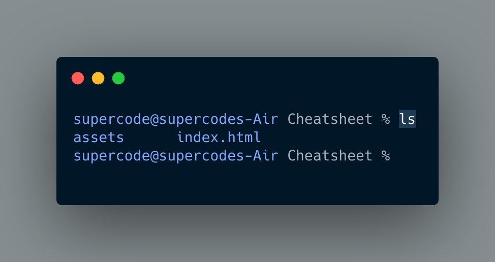
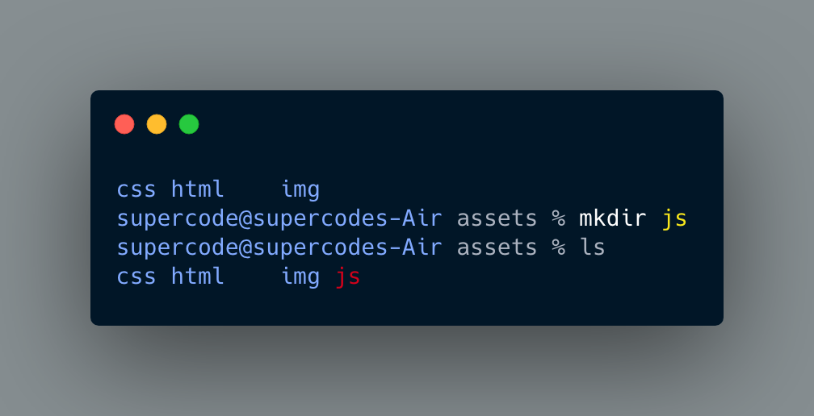
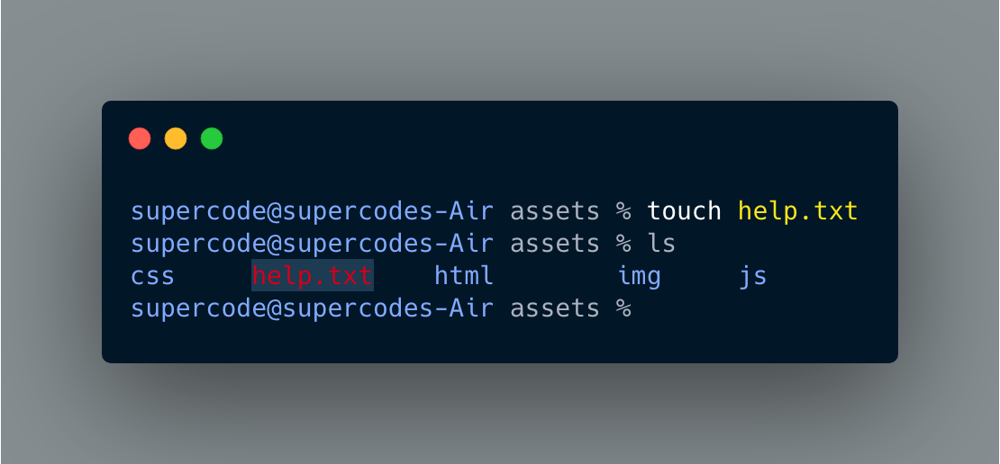
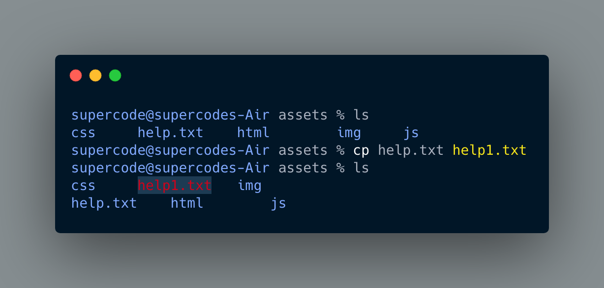
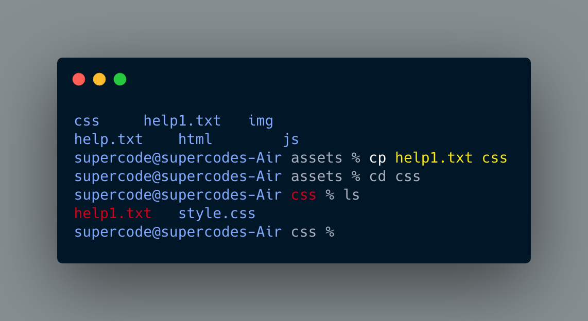
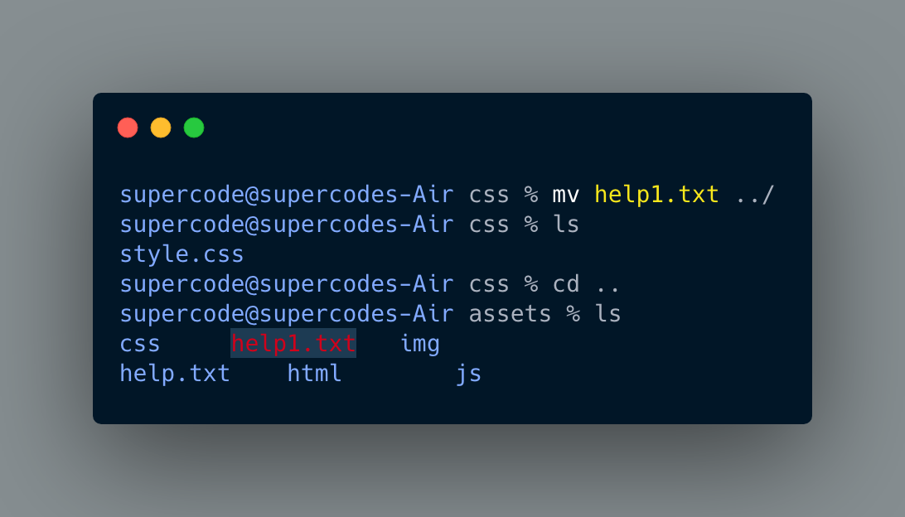
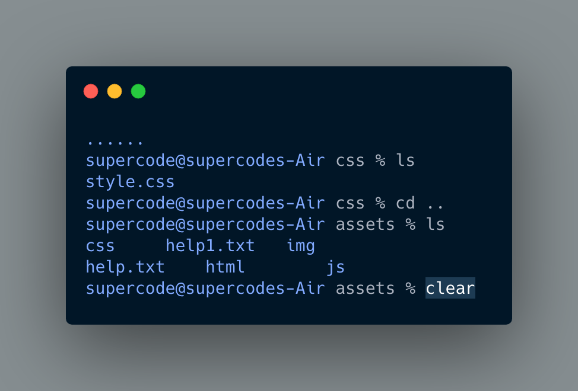
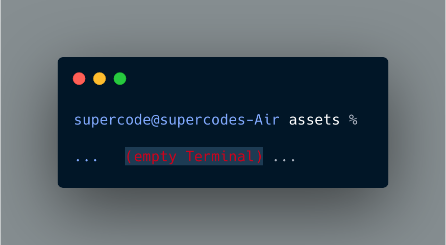
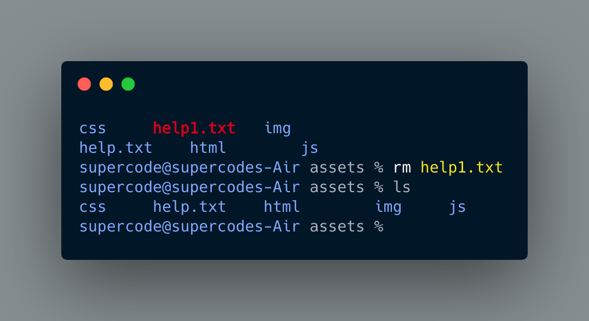

PWD
..stands for Print Working Directory. It prints the path of the working directory, starting from the root. pwd is shell built-in command(pwd) or an actual binary(/bin/pwd). $PWD is an environment variable which stores the path of the current directory
SHOWS THE ACTUAL DIRECTORY!
LS
In computing, ls is a command to list computer files in Unix and Unix-like operating systems. ls is specified by POSIX and the Single UNIX Specification. When invoked without any arguments, ls lists the files in the current working directory. The command is also available in the EFI shell.
SHOWS THE ACTUAL CONTENT (files and folders) of YOUR DIRECTORY!
CD
CD is among the commands you use most often on the command line. It changes your working directory. Use it to move around in the hierarchy of your file system.
Jumping TOOL for FAST job

MKDIR
Use this command to create one or more new directories. Include one or more instances of the DIRECTORY variable (separating each with a whitespace), and set each to the complete path to the new directory to be created. If directories within a named path do not exist, an error will be generated.
CREATE A NEW DIRECTORY!
TOUCH
A TOUCH screen terminal allows the user to directly interact with the device without secondary equipment like a mouse or keyboard. It does not need a stylus.... WHATEVER
CREATE A NEW FILE/ FILES!
CP
is a Linux shell command to copy files and directories.
COPYING AND RENAMIN' THE STUFF AROUND
 MV
...(short for move) is a Unix command that moves one or more files or directories from one ... If the existing file is not writable but is in a directory that is writable, the mv command asks for confirmation (if run from a terminal) before proceeding, ... as an atomic copy-and-delete action; the actual details are dependent upon the ...
MOVING AND RENAMING THE STUFF AROUND
CLEAR
..is a computer operating system command which is used to bring the command line on top of the computer terminal. It is available in various Unix shells on Unix and Unix-like operating systems as well as on other systems such as KolibriOS.
MAKES ALL THE STUFF DISAPPEAR... :P
 RW
Deleting items...
MAKES ALL THE STUFF DISAPPEAR... BUT SERIOUSLY NOW. JUST DO NOT USE IT, IF YOUR NAME IS NOT BILL (Gates)
